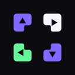

Layout aware
Automatic mode interprets the same shortcuts for horizontal and vertical tab bars. Force either mode whenever you want.

Push My TabsChrome release v1.0.1
Switch and rearrange tabs with directional shortcuts that adapt to horizontal or vertical layouts.
Open source · Local only · No analytics
01 Follows your tab axis
02 Learns tricky pages locally
03 Reads no page content
ONE MENTAL MODEL
No modes to memorize while working. The same four commands switch or move tabs according to the layout you can see.
Automatic mode interprets the same shortcuts for horizontal and vertical tab bars. Force either mode whenever you want.
Start with a sensible preset or map every direction separately. Chrome keeps the actual shortcuts under your control.
Save a layout for a complete site or one exact path. Push My Tabs remembers the browser geometry that worked.
› accounts none
› analytics none
› page content never read
› remote code none
✓ settings stay in browser storage
PRIVATE BY ABSENCE
No accounts, ads, telemetry, host permissions, content scripts, or remote code. Site geometry profiles stay inside your browser.
Read the privacy policyREADY WHEN YOUR TABS ARE
Chrome 127+ · MIT licensed